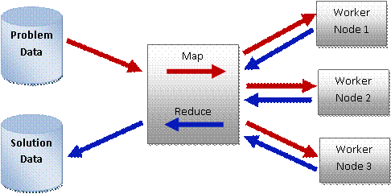
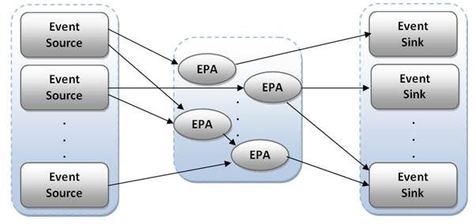

Big data refers to huge collection of various complex data sets whose size is beyond the ability of traditional data processing methods and typical data base software to capture, store, manage, process, and analyze. The term ‘Big Data’ implies the exponential growth, availability and the use of information gathered from data sources like Web server logs and Internet click stream data, social media activity reports, log files that are constantly appending transactions, mobile-phone call detail records, digital pictures and videos, information capturing sensors etc. In practice, the term “big data” is used to refer to high volume, high velocity, high variety and high complexity. The three Vs, the volume, variety and velocity define the basic attributes of big data [13].
Data volume is the primary attribute of big data. Textual data streaming in from social media networks, increasing amounts of sensor data collected, transaction based data which are being collected in massive amounts etc. contribute in spanning the volume of data.
Big data come from a great variety of sources like Web sources, including logs and click streams, and social media etc. The structured, semi structured and unstructured data generating from those sources appear in massive number of different formats, types and forms like text, sensor data, audio, video, click stream, log files, etc.
The frequency of data generation and the frequency of data delivery are extremely high in big data. Big data, which have been produced in a very high rate, are collected in real time as click stream data from web sites, sensor data etc and data processing for many purposes also has to be done in a very high rate, in real time in order to react quickly enough to meet the demand.
Big data analytics is the process of applying advanced analytic techniques in the purposes of examining huge sets of data of variety of types, in variety of size and formats, to uncover hidden patterns, unknown correlations and other useful information.
Big data analytics is a complex and a different process from traditional data analytic rules, methods and tools. A special analytical process has to be followed in big data analytics. Data acquisition and recording, information extraction and cleaning, data integration, aggregation and representation, Query processing, data modeling and analysis, and finally interpretation are the steps in analyzing big data [1] and they are illustrated below.
Recoding data from data generating sources without discarding useful information is the very first step in analysis process. There are some concerns on this. Some data are correlated, some has to be processed online and we have to concern about data reduction by intelligently processing raw data to a size that can be managed without any loss. What is the data, how it has to be recorded and measured are another main concern in data recording and acquisition.
The information recorded may be not in the format which is ready to be analyzed. Thus it is required an information extracting process that pulls out only the required information only from underlying resources and formatting them as suitable for analysis purposes. Recognizing valid data, removing incorrect data in related to data cleaning and it is essential since fake or incorrect data may lead to false, incorrect or incomplete analysis decisions.
Due to the heterogeneity of big data, it is not enough of locating, identifying and citing the data. Since it is more complex, it requires the use of differences in data structures and semantics which are computer understandable.
Since Big Data is heterogeneous, untrustworthy, inter-related and dynamic, big data mining and querying methods are different from traditional methods. Big Data mining requires integrated, cleaned, trustworthy and efficiently accessible data, scalable mining algorithms, declaratively querying interfaces.
With the results of the analysis, the decision maker has to interpret the final result in user understandable way. It is important to convey the queried results using a system with a rich palette of visualization.
Big data are growing rapidly in the modern era. For example, the number of connected devices exceeded the world population before the end of 2011, and will reach 15 billion in 2015 [2]. Thus most of the effective systems platforms in current world which have to tackle with big data should be consisted with five key features.
First, it must detect relevant patterns and correlations of big data and the torrents of events so that the predictions in the business world, trend and opportunities in sales and marketing, instance of risks in enterprises can be interpreted. Second, such system platforms must be capable of powerful analytics so that anyone can interpret and immediately understand what is happening at the moment of truth. As the third element, the platforms should have automation to initiate corrective actions based on recognized patterns. Also those platforms have to be flexible enough to compose and assemble new lightweight applications on the fly. Fourth, the platform should scales elastically across cloud environments etc. As the fifth, the platform should provide natural environment for collaboration. [2]
Big data was a problem but now an opportunity generator in business world. There are so many advantages of big data analytics. Social-influencer marketing, customer-base segmentation, recognition of sales and market opportunities, understanding of business change, better planning and fore casting, market sentiment trending, cost reduction, fraud detection, risk management are some of them. Thus big data analytics plays a significant role in modern world [13]. For example, huge sets of data from Social Medias like facebook, tweets, blogs, review sites, news articles and various web contents etc are processed in order to analyze sentiments of the people and the analytical results can be used on many purposes.
There are major challenges appear in Big Data analytics due to its three Vs which are referred for high data volume, high data variety and high data feed velocity. The biggest challenge faced by big data analytical platforms is managing scale. In the other words, managing large and rapidly increasing volume of data. Due to the limitations in storage, CPU processing power and the speed of processing this has become a huge problem in Big Data world. Since the data sets are heterogeneous and incomplete some other aspect of big data analytic is being challenged. Timeliness is another challenge because processing a given set of big data faster is less feasible in current data analytical systems, in situations which the results of analysis are required immediately. Thus designing big data analyzing platforms become particularly challenging when the data volume is growing rapidly and the queries have tight response time limits. Maintaining security and privacy is another challenge addressed by big data analytics.
Big data analytics has become more challenging due to the incapability of the traditional data base management tools, data processing tools and storage mechanisms etc. in big data managing. But with the revolution of big data analytics, new methodologies, tools, concepts, programming models and applications for managing, capturing, processing and interpreting big data.
NoSQL is interpreted as ‘Not Only SQL’, since it came up with alternatives for Relational Data Base Management Systems (RDBMS)/ SQL. NoSQL data bases are for the data storage of big data, when the data does not require any relation model.
The data management requirements of modern big data related applications could not be satisfied with the use of RDBMSs, which have been used as the default solution for many years so that it became essential to move into a new approach of data management which can avoid the drawbacks emerged from existing RDBMSs. Thus, NoSQL, was introduced as the alternative approach, and the motives for NoSQL, instead of RDBMS are illustrated in the list below.
There are four types of NoSQL databases used in distinctive approaches [4].
Key- value stores uses keys and their corresponding values, to store data in scheme-less way. This enables the querying of millions of values in a very short time period than time required in conventional data stores. Oracle NoSQL database is an example for that.
Tabular stores, also known as Bigtable stores consist of tables which can have different schema for each row and each row can be considered of having one huge extensible column containing data. Widely used example of this type is BigTable and Apache HBase[7].
This type of data bases consist of a set of documents each of which contains fields of data in standard formats like XML or Json. Data in this document stores, can be structured in scheme less way as such collections. MonoDB, OrientDB are examples for this type.
Graph data bases have a set of nodes linked together by edges. Each node in the graph contains fields of data and the querying takes place using efficient mathematical graph-traversal algorithms to achieve performance. Neo4J and the graph layer of OrientDB are the examples for them.
NoSQL data bases can be differentiated from other data storage systems, because of the special characteristics of them. Those are described below.
Apache Cassandra is an open source distributed database management system to handle big data, spread across many commodity servers. It is a NoSQL based solution which provides high availability and scalability. Cassandra supports for replication across multiple nodes in a cluster to achieve fault tolerance, and provides low latency. Since Cassandra is decentralized, there are no single points of failure, no network bottlenecks. Apart from that, it supports horizontal scalability, with no downtime or interruption to applications.
Netflix, eBay, Twitter, Urban Airship, Constant Contact, Cisco, Reddit, OpenX are some of the examples where the Cassandra has been using as the database management system [5].
Map reduce is a programming model for processing and generating massive data sets. It can be used to process parallelizable problems across huge data sets using cluster of nodes (if all nodes are on the same local network) or a grid (if the nodes are on a shared distributive systems). The computational processing of data can occur for structured and unstructured data, so that the data stored in file systems as unstructured data and the data stored in database systems as structured data can be efficiently processed via Map Reduce programming paradigm.
Map reduce allows for distributed processing of the map and reduction operations. It uses a specific map function that processes <Key, Value> pair to generate a set of intermediate <Key, Value> pairs and a reduce function to merge all the intermediate pairs associated with the same intermediate key [6].
In Map Reduce model, there are three steps of processing is applied to a particular data set Those phases are mapping, shuffling, and reducing the data records in order to process them [8].
In this phase, a Map or a User Defined Function (UDF) is executed on each record of the data set. The file or the data set typically striped across many computers or nodes and many processes or the Mappers work on the file in parallel [8]. As shown in the Figure 1, the master node of the grid or the cluster of nodes takes the input, divides it into smaller sub problems and distribute them in the worker nodes. Each worker node follows the same procedure leading a multi level tree structure and the worker node which processes the smaller problem, passes the answer back to the master node. The output of each call to Map is a list of key and value pairs.
In this phase, all the <Key,Value> pairs are sent to another set of nodes (computers) such that all the pairs with the same Key go to the same node. At each destination node, <Key,Value> pairs with same Key are aggregated together. If <x, y1>, <x, y2>, <x, y3>…..<x, yn> are the all <Key, Value> pairs generated by Mappers with same Key of ‘x’, at the destination node for Key ‘x’, so that these pairs are aggregated into large <Key, Value> pair such that <x,{y1, y2, y3,….. yn}> [8]. The aggregated pair is called as Reduce Record, and its key is referred to as the Reduce Key.
In Reduce phase, a UDF, also called Reduce is applied to each Reduce Record through parallel processes. Each process is called as Reducer. Ultimately, for each invocation of Reduce, a few sets of records get written into local output file.

Figure 1 - Architecture of Map Reduce
Map Reduce automatically parallelizes and executes the program on large clusters of machines while partitioning the input data, scheduling the program’s execution across set of machines, handling machine failures, and managing the inter-machine communication in run time. A typical Map Reduce computation can process many terabytes of data on hundreds or thousands of machines [6].
Compared to parallel databases, Map Reduce has many advantages. When a parallel DBMS is used to perform big data analytics, the inputs has to be loaded to database and this loading phase is inconvenient and unacceptably slow. But Map Reduce is storage system independent and it can process data without initially requiring it to be loaded into database. Generally it is possible to run more than 50 map reduce analysis over the data and complete analysis, even before it is possible to load data into data base and complete a single analysis [6]. Apart from that, complicated transformations can be easily expressed in Map Reduce than in SQL.
Map Reduce uses a pull model for moving data between mappers and reducers which opposed to a push model where mappers write directly to reducers and since that Map Reduce implementations have fault tolerant properties. Literature provides evidences that a dozen distinct data sets at Google more than 1PB in size and dozens more hundreds of TBs in size that are processed daily using Map Reduce [6]. Thus Map Reduce model and its implementations are trusted in fault tolerance in processing of big data.
Map Reduce provides a simple model for analyzing data in heterogeneous systems such as production environments which contain a mix of storage systems like relational databases, file systems etc. End users of Map Reduce can extend it to support new storage systems like files stored in distributed systems, data base query results, data stored in Bigtable, and structured input files such as B-trees using an implementation of a simple reader and writer functions.
Increasing performance is another concern in the implementation of Map reduce model. It does not need a full scan of over the data and it avoids unnecessary data readings.
But there are some issues with Map Reduce model. It cannot use indices and it implies a full scan of all input data. That is inefficient. The inputs and outputs of Map reduce are always simple files in a file system. In Map Reduce, it is required the use of inefficient textual data formats. Those are the issues with Map Reduce data processing [6].
Hadoop is the main open source implementation of Map Reduce programming paradigm [14]. Hadoop is for distributed processing of extremely large amounts of data (Data in petrabytes). In addition of the size, Hadoop can handle any type of data such as pictures, log files, video, audio files, and many more without concerning whether the data is structured or unstructured. Since Hadoop can be used to process a wide array of data, it allows more closer and accurate query representation. Data sets stored in Hadoop Distributed File System are organized across cluster of computers and it is able to handle anywhere from a single server to thousands of machines [9]. Hadoop provides reliability by creating redundant data and with Hadoop it is not required to build a schema prior to storing information in the file system. Scalability, reliability and portability are the advantages of using Hadoop in Big data analytics.
The structure of Hadoop is contained with cluster of computes. The servers are grouped into several clusters to achieve efficiency. There is a node in the network that gathers location information. Another node is dedicated for data storage. Depending on the location information, the Distributed File Syetem replicates data from one server node and stores it in another node to achieve redundancy of data to avoid the risk of server failure.
Apache HBase[7] is the data base used by Hadoop which is a distributed and scalable data storage for structured big data. HBase is appropriate for real-time random read/write access to the big data which are being stored as column oriented store model.
Apache Hive is a data warehouse system for Hadoop framework [10]. It provides the facility of summarization, ad-hoc queries, and analysis of big data stored in Hadoop compatible file systems. Hive uses a SQL like language called, HiveQL to query data and.
Facebook is a very popular social network which has been used by millions of users all around the world and it is one of the prominent users of Apache Hadoop framework. Thus, such social network have some specific and major requirements related with data processing, data storage etc. The data management requirements of a social media network like facebook and the reasons for using Hadoop for Facebook, instead of other data processing tool are illustrated below.
Elasticity is a major requirement of storage in social media networks. It should be able to add incremental capacity to storage with minimal overhead with no downtime. In a case of handling rapid growth of the number of users of a social media like facebook, it is required to add more capacity rapidly and system should be capable of automatically balancing the load. High write throughput is another significant feature of a storage system of social network, since it stores tremendous amount of data. To achieve high availability and disaster recovery in Facebook, it is required to provide a service with high uptime to users that cover both planned and unplanned events. Apart from that it should be able to manage the loss of data center with minimum damage and minimum data loss and be able to serve data out of another data center in minimum time period. Efficient, low-latency, strong consistency of data, fault isolation, ability of retrieving data set in a particular range are some other requirements [11]. Those are the requirements of Facebook achieved by using Hadoop and HBase as the data processing tool and data store. s or power outages.
With the increase of popularity of online product reviewing sites, online rating systems, and social media networks like Twitter, Facebook etc, innumerable amount of events are being generated showing an exponential growth in event generating rate. By capturing these user or application generated events, processing and analyzing them lead to achieve magnificent goals in many areas. But due to the complexity and high rate of generating events in massive amounts, continuous event capturing in real time, smooth processing and analyzing has become rally challenging in current world. Thus to overcome from those existing challenges, the concept of Complex Event Processing has been introduced.
Complex event processing is the technology of real time processing and analyzing complex and massive amounts of event streams which are constantly generated by real world applications and operations [12]. CEP can be used to identify meaningful patterns and relationships among unrelated streaming events. CEP can be utilized to perform efficient event processing for two categories of event based application. The applications which monitor surveillance, manufacturing and financial trading requests belong to one category which require low latency. The other category is the applications based on web analytics and data ware housing which need to handle higher data rates.
A CEP engine provides the runtime to perform Complex Event Processing where it accept the user defined queries, match those accepted queries against continuously streaming events and trigger an event when the relevant conditions are satisfied.

Figure 2 - CEP Infrastructure
The CEP infrastructure is consisted with a set of event sources, a set of event processing agents (EPA), and a set of event sinks [105]. In figure 2, it is displayed that how those main three components are integrated in CEP infrastructure. EPAs are referred to continuous queries which are responsible of performing the tasks like filtering, aggregating and correlating events or searching for a particular event pattern. EPAs are connected with Event sources and Event Sinks and sometimes EPAs can be interconnected. Each event source in CEP application has to be registered in the system first and then EPAs are dined on registered event source. Ultimately event sinks are registered and connected to EPAs to access queried results. Most of the CEP systems are shows a horizontal behavior since that the addition and removing of event sources, EPAs and event sinks are supported by the infrastructure.